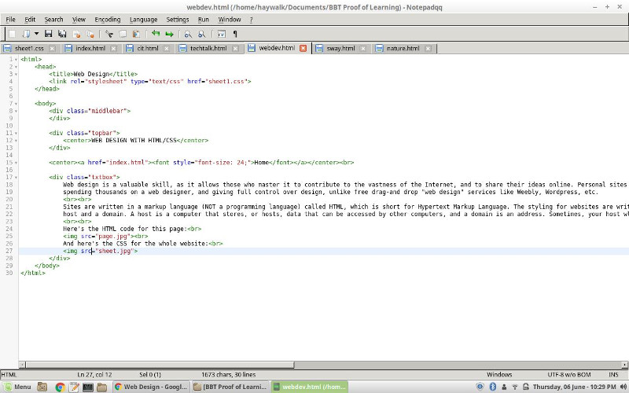
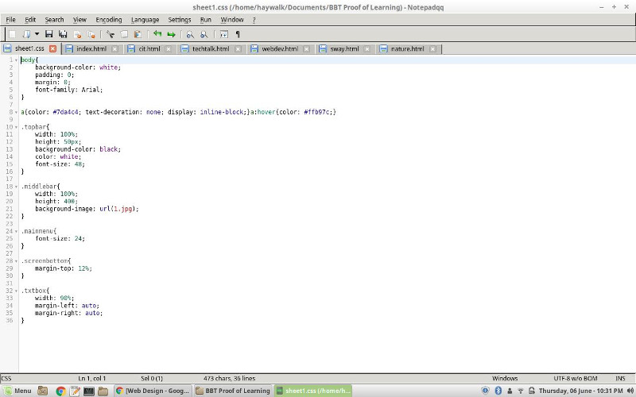

WEB DESIGN WITH HTML/CSS
Home
Web design is a valuable skill, as it allows those who master it to contribute to the vastness of the Internet, and to share their ideas online. Personal sites can be used to promote a cause, a business, to share ideas and interests, and for many other useful purposes. Knowing how to create a webpage allows one to do all of the above without
spending thousands on a web designer, and giving full control over design, unlike free drag-and drop "web design" services like Weebly, Wordpress, etc.
Sites are written in a markup language (NOT a programming language) called HTML, which is short for Hypertext Markup Language. The styling for websites are written in another markup language called CSS, short for Cascading Stylesheets. After learning both languages, the challenge of uploading your site to the WWW still remains; you'll need a
host and a domain. A host is a computer that stores, or hosts, data that can be accessed by other computers, and a domain is an address. Sometimes, your host wll provide you with a domain (like mine, Github) but otherwise they must be registered, which costs a monthly fee.
Here's the HTML for this page:

And here's the CSS for the whole website:
